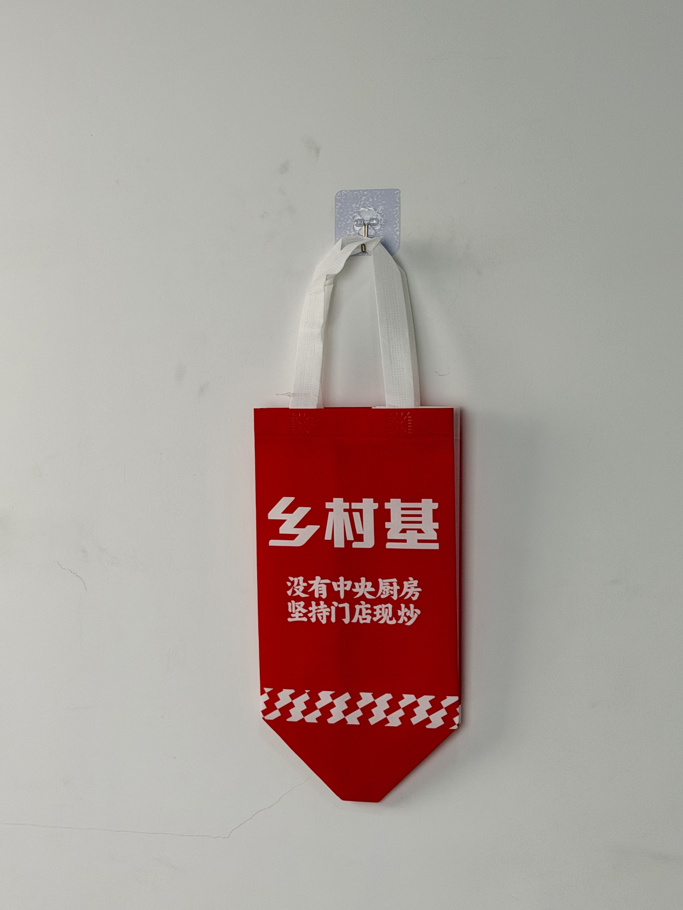

A bold red insulated tote designed for XiangCunJi, a Chinese fast-casual chain, featuring confident white typography and a geometric shield base that signals freshness and kitchen authenticity in every delivery.

XiangCunJi is one of China's largest fast-casual dining chains, with over 1,000 locations specializing in freshly stir-fried Chinese dishes served at accessible prices. The brand's core competitive advantage is its commitment to in-store cooking — explicitly rejecting the centralized kitchen model common among competitors. This "no central kitchen, fresh-cooked in every store" philosophy has become the centerpiece of its marketing and brand identity.
Our customers choose us because they believe in fresh cooking. The bag needs to carry that promise from our wok to their table.
With delivery representing an increasingly dominant sales channel, XiangCunJi recognized that packaging had become a critical touchpoint for brand trust. A generic white plastic bag undermined the premium positioning of fresh-cooked food; the new thermal tote needed to signal quality, warmth, and authenticity before the customer even opened the container.
The design language is deliberately bold and declarative. Rather than relying on illustrations or complex graphics, the bag communicates through pure typography and color psychology. The intense red field evokes appetite and urgency, while the oversized white characters "乡村基" dominate the visual hierarchy with the confidence of a market leader.
High-saturation red triggers appetite response and creates immediate visibility in delivery rack environments.
"没有中央厨房 坚持门店现炒" converts a supply-chain decision into a consumer-facing trust signal.
White wave motif at the base adds kinetic energy and visual rhythm without competing with primary messaging.
Geometric bottom prevents tipping during scooter delivery, protecting soup containers and sauced dishes.
The bag was specified for the demanding conditions of Chinese urban food delivery: 20-30 minute transport times, electric scooter vibration, and stacked loading in delivery backpacks. Thermal retention, structural stability, and cost efficiency were optimized for franchise-wide deployment across 1,000+ locations.
| Parameter | Specification | Test Standard |
|---|---|---|
| Thermal Retention | > 55°C for 25 min | Internal Protocol |
| Load Capacity | 5 kg | ASTM D5265 |
| Color Fastness | Grade 4-5 | ISO 105-B02 |
| Seam Strength | > 25 N/cm | ASTM D1683 |
Producing for a 1,000-location chain requires supply-chain reliability and batch consistency. The five-stage workflow was designed to deliver 200,000 units within 45 days while maintaining color and print quality across all batches.
Red PP non-woven fabric extruded with color-masterbatch for batch consistency. Delta E controlled within 1.5 across production runs.
Automatic flatbed screen press with opaque white plastisol. Flash curing prevents dye migration from red substrate.
Three-layer composite: printed non-woven / 3mm EPE foam / aluminum-PE barrier. Hot-roll bonded at 3kg/cm pressure.
Geometric bottom panels cut with ultrasonic sealing. Pre-scored fold lines ensure consistent assembly geometry.
Double-needle stitching at 8 SPI. White handles attached with box-X reinforcement. AQL 2.5 general inspection.
The thermal tote was deployed across XiangCunJi's entire network as part of a brand-wide packaging upgrade. The rollout replaced generic plastic bags with insulated branded carriers, aligning the delivery experience with the brand's premium fresh-cooking positioning.
Key Insight: Consumer focus groups indicated that the "no central kitchen" message on the bag significantly increased perceived food quality — even among customers who had never visited a XiangCunJi location. The packaging effectively communicated a brand promise that differentiated the chain from competitors using pre-prepared meal kits.
The distinctive red color became a navigational aid for delivery drivers. In dense Chinese residential complexes where dozens of delivery bags accumulate at building entrances, the bright red XiangCunJi tote was consistently identified and retrieved faster than competitor packaging — reducing failed deliveries and improving courier efficiency.
Three structural decisions distinguish this delivery bag from standard fast-casual packaging. Each was informed by direct observation of Chinese food-delivery behavior and consumer psychology.
By printing "没有中央厨房 坚持门店现炒" directly on the bag, XiangCunJi transforms packaging into a trust-verification device. Customers can physically see the brand promise at the moment of delivery, reinforcing the decision to order.
The one-color white screen print on red masterbatch fabric achieves visual impact comparable to multi-color gravure at approximately 40% lower unit cost. This cost efficiency enabled nationwide franchise deployment without margin pressure.
The wave motif at the bag's base creates subliminal associations with freshness and movement — visual metaphors that align with the "fresh-cooked" brand positioning without requiring additional text or explanation.
We manufacture thermal delivery bags for fast-casual chains across China and Southeast Asia. From trust messaging to thermal engineering, we design packaging that converts delivery into brand experience.